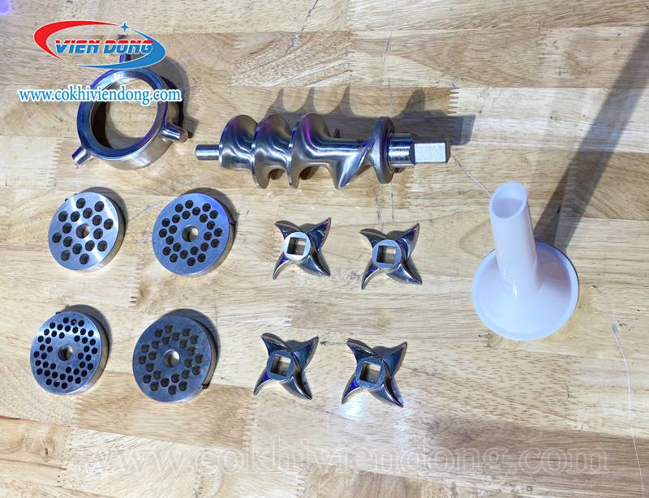
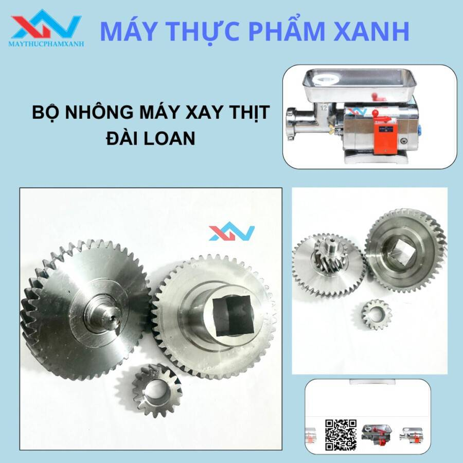

Phụ kiện máy xay thịt công nghiệp chính hãng
Tân Minh Group
22/06/2024 13:00 15
Phụ kiện máy
xay thịt công nghiệp đóng vai trò quan trọng trong
việc đảm bảo hiệu suất hoạt động, độ bền bỉ và khả năng đáp ứng nhu
cầu xay thịt đa dạng. Bên cạnh việc lựa chọn phụ kiện phù hợp, việc
bảo trì, vệ sinh định kỳ cũng rất quan trọng để đảm bảo hiệu suất hoạt
động và kéo dài tuổi thọ cho máy xay
thịt công nghiệp. Cùng tìm hiểu chi tiết ngay
sau đây!

Các loại phụ kiện máy xay thịt công nghiệp phổ biến
1. Dao và Mặt Dao:
- Dao xay thịt:
- Có nhiều loại dao với số lượng cánh và hình dạng khác nhau (2
cánh, 3 cánh, 4 cánh...) tùy thuộc vào loại thịt và kích cỡ xay
mong muốn.
- Chất liệu dao thường là thép không gỉ chất lượng cao, đảm bảo
độ sắc bén và khả năng chịu mài mòn.
- Mặt dao (khay xay):
- Lựa chọn mặt dao với kích thước lỗ phù hợp (thô, vừa, mịn) để
cho ra thành phẩm thịt xay theo yêu cầu.
2. Trục Xoắn (Trục Vít):
- Đây là bộ phận đẩy thịt vào dao xay.
- Cần lựa chọn trục xoắn phù hợp với công suất máy và loại thịt cần
xay.
3. Phễu Chứa Thịt:
- Có nhiều kích thước phễu để chứa lượng thịt khác nhau.
- Phễu thường được làm từ inox chống gỉ, dễ dàng vệ sinh.
4. Chân Đế:
- Chân đế chắc chắn giúp cố định máy xay, giảm rung lắc trong quá
trình hoạt động.
5. Dây Curoa:
- Truyền động cho máy xay hoạt động.
- Lựa chọn dây curoa chất lượng, đúng kích cỡ.
6. Các Phụ Kiện Khác:
- Cối xay giò chả: Dùng để xay nhuyễn các loại giò
chả, xúc xích,...
- Dụng cụ nhồi xúc xích: Gắn vào máy xay để nhồi
thịt vào vỏ xúc xích.
- Bộ phận bảo vệ quá tải: Tự động ngắt điện khi quá
tải, bảo vệ động cơ.
Lưu ý khi sử dụng phụ kiện máy xay thịt công nghiệp:
- Sử dụng đúng loại phụ kiện phù hợp với model máy xay thịt.
- Vệ sinh phụ kiện sau mỗi lần sử dụng để đảm bảo vệ sinh an toàn
thực phẩm.
- Bảo quản phụ kiện nơi khô ráo, thoáng mát.
- Thay thế phụ kiện khi bị hỏng hoặc mòn để đảm bảo hiệu quả hoạt
động của máy.
Tiêu chí lựa chọn phụ kiện máy xay thịt phù hợp
1. Ưu Tiên Phụ Kiện Chính Hãng:
- Đảm bảo chất lượng vượt trội, độ bền cao và khả năng tương thích
hoàn hảo với máy xay.
- Tránh tình trạng hỏng hóc, trục trặc ảnh hưởng đến hiệu suất hoạt
động và tuổi thọ máy.
2. Xác Định Nhu Cầu Sử Dụng Rõ Ràng:
- Lựa chọn loại dao, mặt dao phù hợp với loại thịt và kích cỡ xay
mong muốn.
- Ví dụ: Dao 2 cánh cho thịt xay nhuyễn, dao 4 cánh cho thịt xay
vừa, mặt dao lỗ nhỏ cho thịt xay mịn.
- Xác định kích thước phễu chứa thịt phù hợp với năng suất sử dụng.
3. Chất Liệu Cao Cấp - An Toàn Vệ Sinh:
- Ưu tiên chất liệu inox 304, thép không gỉ đảm bảo độ bền bỉ, chống
gỉ sét, dễ dàng vệ sinh.
- Đảm bảo an toàn vệ sinh thực phẩm, bảo vệ sức khỏe người tiêu
dùng.
4. Thương Hiệu Uy Tín - Giá Cả Hợp Lý:
- Lựa chọn thương hiệu uy tín như Berjaya, NewSun, Panasonic, Điện
Máy Bếp Việt, Máy Thực Phẩm Tân Minh...
- Tham khảo giá cả từ các nhà cung cấp uy tín, so sánh để lựa chọn
sản phẩm phù hợp với ngân sách.
5. Chế Độ Bảo Hành Đảm Bảo:
- Lựa chọn nhà cung cấp có chế độ bảo hành chính hãng, hỗ trợ khách
hàng tận tâm.
- Đảm bảo quyền lợi và an tâm trong quá trình sử dụng.

Máy Thực Phẩm Tân Minh - Nơi Cung Cấp Phụ
Kiện Máy Xay Thịt Công Nghiệp Uy Tín
Bạn đang tìm kiếm địa chỉ cung cấp phụ kiện máy xay thịt công nghiệp
uy tín tại TP.HCM? Máy Thực Phẩm Tân Minh là lựa chọn hoàn hảo dành
cho bạn!
Giới Thiệu Về Máy Thực Phẩm Tân Minh:
- Công ty TNHH Cơ Khí Và Chế Tạo Máy Thực Phẩm Tân Minh hoạt động
trong lĩnh vực cung cấp máy móc, thiết bị và phụ kiện cho ngành chế
biến thực phẩm.
- Sở hữu đội ngũ kỹ sư tay nghề cao, giàu kinh nghiệm cùng hệ thống
máy móc hiện đại, Tân Minh luôn mang đến cho khách hàng những sản
phẩm chất lượng cao với giá cả cạnh tranh.
Cam Kết Chất Lượng Sản Phẩm, Dịch Vụ:
- Máy Thực Phẩm Tân Minh cam kết cung cấp phụ kiện máy xay thịt công
nghiệp chính hãng, chất lượng cao, đảm bảo an toàn vệ sinh thực
phẩm.
- Sản phẩm được kiểm tra kỹ lưỡng trước khi xuất kho, đảm bảo hoạt
động hiệu quả và bền bỉ.
- Dịch vụ khách hàng chuyên nghiệp, tận tâm, hỗ trợ tư vấn và giải
đáp thắc mắc 24/7.
Chính Sách Bảo Hành, Đổi Trả:
- Máy Thực Phẩm Tân Minh áp dụng chính sách bảo hành 12 tháng cho
tất cả các phụ kiện máy xay thịt công nghiệp.
- Đổi trả miễn phí trong vòng 7 ngày nếu sản phẩm lỗi do nhà sản
xuất.
- Hỗ trợ bảo trì, sửa chữa tận nơi cho khách hàng trong khu vực
TP.HCM.
Social share
Bài viết liên quan
Comments
Chưa có comment.
Đề lại Comment